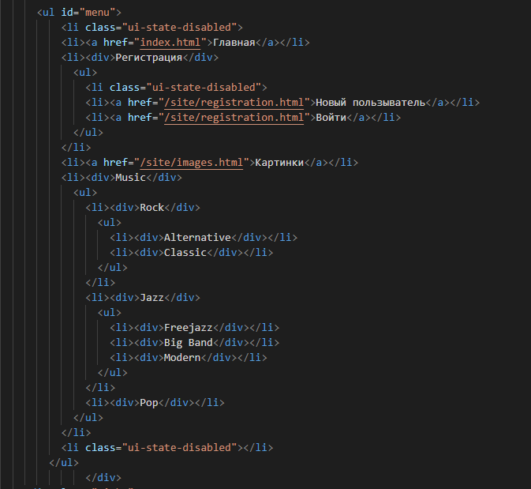
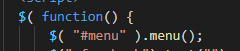
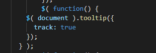
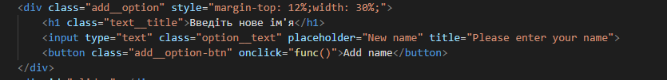
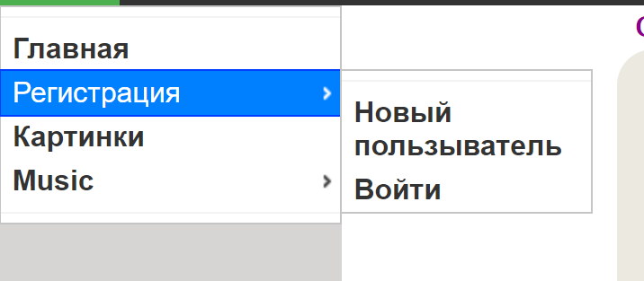
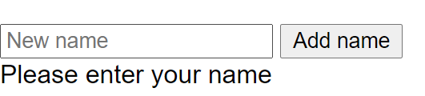

Синтаксис jQuery розроблений, щоб зробити орієнтування у навігації зручнішим завдяки вибору елементів DOM, створенню анімації, обробки подій, і розробки AJAX-застосунків. jQuery також надає можливості для розробників, для створення плагінів у верхній частині бібліотеки JavaScript. Використовуючи ці об'єкти, розробники можуть створювати абстракції для низькорівневої взаємодії та створювати анімацію для ефектів високого рівня. Це сприяє створенню потужних і динамічних веб-сторінок.
Код динамічного елементу випадне меню
 Код динамічного елементу підказка при наведенні
 Випадне меню
Код динамічного елементу підказка при наведенні
